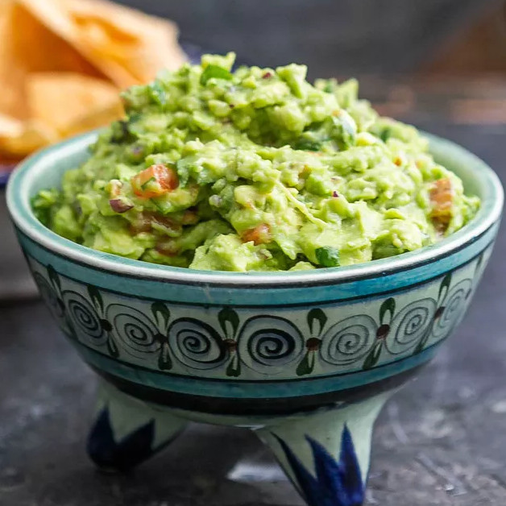

Guacamole

Description
This is the BEST guacamole recipe as it’s simple to make and uses fresh, high quality ingredients. Authentic guacamole doesn’t contain fillers and unnecessary ingredients. All you need is avocados, onion, tomatoes, cilantro, jalapeno pepper, lime juice, garlic and salt. Easy and delicious!
Ingredients
- 3 avocados, ripe
- 1/2 small onion, finely diced
- 2 Roma tomatoes, diced
- 3 tablespoons finely chopped fresh cilantro
- 1 jalapeno pepper, seeds removed and finely diced
- 2 garlic cloves, minced
- 1 lime, juiced
- 1/2 teaspoon sea salt
Steps
- Slice the avocados in half, remove the pit, and scoop into a mixing bowl.
- Mash the avocado with a fork and make it as chunky or smooth as you'd like.
- Add the remaining ingredients and stir together. Give it a taste test and add a pinch more salt or lime juice if needed.
- Serve the guacamole with tortilla chips.
Return to main page
Back to top